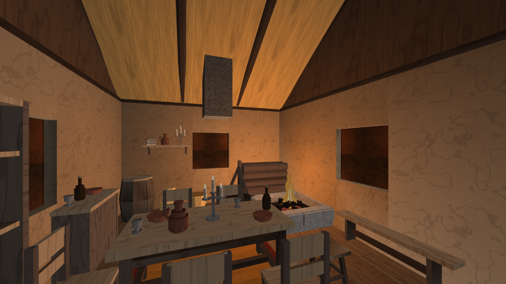
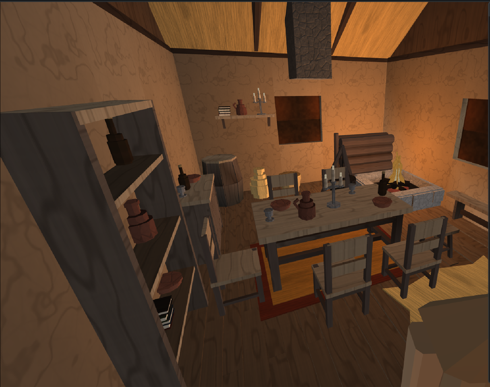

0. Что здесь мерило
Мерилом объявлена не длина списка, а кадр: комната, собранная из полки объектов, рядом со скрином, по которому она собрана. Список из тридцати имён, из которых комната не складывается, ничего не доказывает; шестнадцать имён, которыми комната складывается, доказывают всё. Кадр — в разделе 4.
Material вместо четырёх жёстких программ). Ценность этой волны —
инвентаризация и геометрия: они переживут смену покраски целиком. Тона
здесь положены тем, что умеет нынешний конвейер, — парами
surface/tone девятигранного листа набора плюс слой краски, каким загрузчик
красит город. Металла, ткани и стекла отдельными колонками у набора нет, поэтому железо
ходит камнем тёмного ряда под дёгтем, мешковина и плетение — соломой, стекло — глухим
окном. Каждый такой обход назван словом в колонке «материал словами» — это
готовое задание на перекраску, а не описание достигнутого.
1. Девятнадцать скринов
Пройдены глазами по одному. Ниже — их порядок и краткое «что за комната»; номера ссылаются на имена файлов, чтобы счёт можно было перепроверить.


2. Инвентаризация: предмет → на скольких скринах → есть ли у нас
Счёт — глазами, один проход, знаменатель везде 19. Считалась категория, а не штука: две миски на одном столе — это один скрин, а не два. Порядок строк — по убыванию частоты; он же был порядком выпечки.
| предмет | скринов из 19 | было до волны | эта партия | материал словами (задание на перекраску) |
|---|---|---|---|---|
| Стул со спинкой | 16 | нет вовсе — сидеть было не на чем, кроме лавки | furn-chair | дуб: тёсаный брус ножек, пилёная доска сиденья и спинки |
| Стол | 16 | рецепт furn-table, в реестре не было |
furn-table → в реестр | дуб |
| Посуда: миска, тарелка | 15 | нет | furn-bowl | обожжённая глина, полива |
| Кувшин, бутыль | 15 | нет | furn-jug furn-bottle | кувшин — глина под поливой; бутыль — зелёное стекло и пробковая кора (стекло сегодня ходит «глухим окном») |
| Свеча, канделябр | 15 | только уличный фонарь furn-lamp-wall |
furn-candlestick | кованое железо стана, воск свечей, пламя (самосветное, glow=1) |
| Ковёр | 15 | нет | furn-rug | шерсть, тканьё: кайма и поле (сегодня — солома под краской фалу и охры) |
| Комод, буфет, тумба | 13 | нет | furn-cupboard | дуб; ручки — кованое железо |
| Полка (настенная доска и стеллаж) | 13 | стеллаж furn-shelf; настенной не было, а в кадре чаще именно она |
furn-shelf-wall furn-shelf → в реестр | пилёная доска, косынки — тёсаный брус |
| Очаг и огонь | 12 | furn-hearth, furn-fire — есть |
— в реестр не берутся: у камня износ по месту, пламя косметическое |
камень, зола, пламя |
| Книги | 8 | нет | furn-books | кожа переплёта (краска фалу/синяя/зелёная/дёготь), бумага блока |
| Котёл | 8 | нет | furn-cauldron | чугун тулова (сегодня — камень под дёгтем), жердь треноги, крюк — железо |
| Лавка | 8 | рецепт furn-bench, в реестре не было |
furn-bench → в реестр | дуб |
| Подвешенная снедь: связки чеснока, пучки трав, вяленое мясо и рыба | 8 | нет | следующая партия | лук и чеснок, сушёная зелень, солонина, бечёвка |
| Сундук | 7 | нет | furn-chest | дуб; полосы и накладка замка — кованое железо |
| Корзина | 7 | нет | furn-basket | ивовый прут, плетение |
| Шкура на полу | 7 | нет | furn-hide | мех (белая медвежья/козья; сегодня — солома под белилами) |
| Кубок, кружка | 7 | нет | furn-cup | олово, пьютер |
| Круглая настенная плакетка, щит-блюдо | 6 | нет | следующая партия | дерево, роспись, оковка |
| Картина в раме | 6 | нет | следующая партия | рама — дуб, поле — холст |
| Растение в горшке, кадка с зеленью | 6 | уличный furn-planter — не комнатный |
следующая партия | глина горшка, листва |
| Еда: хлеб, круги сыра, овощи | 6 | нет | следующая партия | печёный хлеб, сыр, репа и капуста |
| Табурет | 5 | нет | furn-stool | дуб |
| Кровать | 5 | furn-bed — единственный жилец полки до этой волны |
был | дуб рамы, лён настила, шерсть одеяла |
| Голова зверя на стене | 5 | нет | следующая партия | мех, рог, дубовый щит основания |
| Бочка | 5 | рецепт furn-barrel есть |
печь ОТКАЗАЛА см. раздел 5 | дуб клёпки, обручи — железо |
| Мешок | 3 | нет | furn-sack | мешковина, лён, бечёвка на горловине |
| Дрова у очага | 3 | дворовая поленница furn-woodpile |
следующая партия комнатная вязанка, 1.5 м — не для комнаты | берёзовые поленья, кора |
| Гобелен, знамя | 3 | нет | следующая партия | шерсть, лён, кисти |
Что видно из таблицы
Первые двенадцать строк — это всё, что стоит больше чем на половине скринов, и до этой волны из них у нас было три с половиной: стол, лавка, стеллаж и очаг с огнём — и ни одного из них не было в перечне объектов, кроме кровати. Отсутствовали целиком: стул со спинкой (16 из 19!), вся посуда, свеча, ковёр, комод. Комнату из трёх столов не соберёшь; отсюда состав партии.
3. Что испечено
Шестнадцать новых чертежей (tools/forge_furniture.cpp,
процедурно, теми же руками slab/panel/bar/quad/drum/disc_n, что стол и
кровать) и двадцать объектов реестра
(tools/forge_furniture_objects.cpp → assets/objects/furniture).
Габариты и число треугольников — замер с самого объекта
(render::measure_object), не паспорт рецепта.
| объект | пятно, м | верх, м | треуг. | кусков | хэш содержимого | материал словами |
|---|---|---|---|---|---|---|
| furn-chair новый | 0.48 × 0.48 | 0.94 | 156 | 3 | fbff484fbde4c487 | дуб |
| furn-stool новый | 0.36 × 0.36 | 0.46 | 108 | 2 | 6b7efce14414dc7e | дуб |
| furn-cupboard новый | 1.05 × 0.54 | 0.92 | 132 | 4 | 5b87a907483b337e | дуб; ручки — железо |
| furn-chest новый | 0.94 × 0.55 | 0.60 | 192 | 3 | 2fbfd55d245de44d | дуб; полосы и замок — железо |
| furn-shelf-wall новый | 1.10 × 0.28 | 0.32 | 72 | 2 | 34b414ad24b88bbb | пилёная доска, косынки — брус |
| furn-cauldron новый | 1.02 × 1.09 | 1.21 | 264 | 2 | 6eeb716266255504 | чугун, жердь, железо |
| furn-basket новый | 0.50 × 0.49 | 0.40 | 180 | 2 | a62ccb37b76ba086 | ивовый прут |
| furn-sack новый | 0.44 × 0.45 | 0.62 | 168 | 1 | c91841e5b40e86bc | мешковина, лён |
| furn-hide новый | 1.68 × 1.23 | 0.02 | 60 | 1 | 563da2e7a7163ca4 | мех |
| furn-rug новый | 2.00 × 1.40 | 0.02 | 24 | 2 | 3747e0214f98008c | шерсть, тканьё |
| furn-bowl новый | 0.24 × 0.23 | 0.08 | 136 | 2 | d6877c8319690948 | обожжённая глина |
| furn-jug новый | 0.24 × 0.19 | 0.30 | 180 | 1 | c0bf5465ee93cc5c | глина под поливой |
| furn-bottle новый | 0.11 × 0.11 | 0.32 | 140 | 2 | d985730dc5ac3642 | зелёное стекло, пробка |
| furn-cup новый | 0.11 × 0.10 | 0.12 | 128 | 1 | 5c544e388ce8872e | олово |
| furn-candlestick новый | 0.26 × 0.22 | 0.51 | 292 | 3 | f43e4353658d30ec | железо, воск, пламя |
| furn-books новый | 0.23 × 0.17 | 0.18 | 192 | 2 | fea2864ed5868e89 | кожа, бумага |
| furn-table был рецептом | 1.80 × 0.90 | 0.80 | 144 | 3 | 8ff4af74ee71d277 | дуб |
| furn-bench был рецептом | 1.60 × 0.35 | 0.45 | 48 | 3 | 569c22b47d6d8941 | дуб |
| furn-shelf был рецептом | 1.18 × 0.35 | 2.05 | 96 | 3 | 19df8619ca510d03 | пилёная доска |
| furn-bed был в реестре | 1.15 × 2.05 | 1.14 | 336 | 3 | 09b01647bd52a00a | дуб, лён, шерсть |
Сумма полки — 3048 треугольников на двадцать предметов, в среднем 152 на предмет. Самый дорогой — кровать (336), самый дешёвый — ковёр (24). Посуда, набранная стопкой призм, стоит 128–180: это цена скругления, и она названа в коде.
Контрольная рука печи
Правило: перепечка даёт тот же файл. Проверено сравнением sha256 боевой полки и повторной выпечки в отдельный каталог:
| объект | боевая полка (sha256, 16) | контрольная выпечка | итог |
|---|---|---|---|
| furn-chair | ff5bd843ce80c659 | ff5bd843ce80c659 | совпало |
| furn-cauldron | 40e8ffe91b0b336c | 40e8ffe91b0b336c | совпало |
| furn-candlestick | 02fbb68bf28c5aa9 | 02fbb68bf28c5aa9 | совпало |
| furn-bed | 9faeb8a6b25af6e5 | 9faeb8a6b25af6e5 | совпало |
Второй контроль, и он важнее первого: хэш содержимого кровати
09b01647bd52a00a не изменился после того, как в печь добавили
девятнадцать соседей. Единственный прежний жилец полки — контрольная рука на саму
правку печи: если бы новые предметы что-то сдвинули в общем коде, кровать это показала бы
первой. И все 30 прежних рецептов furn-* перепеклись
байт-в-байт (git status assets/houses после полного прогона кузницы
показал изменённым только манифест — он вырос на шестнадцать строк).
4. Стенд: комната по скрину S10
Эталон выбран не на вкус, а по счёту: на image copy 9 одновременно стоят одиннадцать позиций партии — больше, чем на любом другом скрине.
Карта interiors/furniture-room, сцена
assets/scenes/furniture-room.scene. Тридцать пять расстановок,
девятнадцать разных объектов, и каждый предмет обстановки стоит ссылкой
[place] object= — телом с полки, тем самым, что в перечне с замером и
хэшем. Рецептами ([house]) стоят только оболочка дома, каменный очаг,
пламя, бочка и поленница — те пять, кому печь реестра отказывает или у кого нет тела
предмета.


Чего в кадре нет и почему — честно
- Люстры над столом (эталон) — в партию не вошла; её место взял канделябр.
- Головы зверя на стене нет — следующая партия.
- Связок трав и чеснока под потолком нет — следующая партия, и это самая заметная нехватка: они на восьми скринах из девятнадцати и держат весь верхний ярус комнаты, который у нас пуст.
- Шкура стоит в сцене, но с уровня глаз в кадр не попадает: комната 4.5 × 6, а пол при взгляде горизонтально начинает быть виден с 3.3 м. Это свойство кадра, не предмета; на верхнем кадре она в правом нижнем углу.
5. Найденное по дороге
Печь реестра ОТКАЗАЛА бочке — и это измерено, а не предсказано
[мебель] furn-barrel — ОТКАЗ: элемент e1: кусок носит мох и грязь ПО
МЕСТУ (износ 0.45, габарит меньше 1.4 м) — запечённый штамп поехал бы по всему городу
одинаковым пятномПроба ставилась нарочно (бочка временно вписывалась в перечень печи, прогон,
откат). Следствие для всей полки: ни один предмет с wear > 0
на куске мельче 1.4 м в реестр не попадёт никогда, пока слой мха считается по месту.
Это касается бочки и, по тому же правилу, дворовой поленницы (её проба не доводилась —
прогон обрывается на первом отказе, и я не выдаю непроверенное за проверенное).
Поэтому ни один предмет новой партии не несёт wear: износ ставится
не рецептом предмета, а слоем отделки по месту, и это решение записано в коде.
Ковёр читался вторым полом — и это чинилось краской, а не тоном
Первая выпечка ковра шла голой соломой (mat 6, тона 1 и 2). На кадре стенда он был
неотличим от сосновой половицы: солома светлого ряда и половая доска сходятся по
светлоте. Тот же дефект был у котла: камень тёмного ряда светлее закопчённого чугуна на
ступень, и котёл читался каменной ступой. Оба вылечены слоем краски — тем же
механизмом, каким загрузчик красит город и каким уже пользуется бордюр
furn-curb (фалу и охра ковру, дёготь котлу). Своего механизма цвета не
заведено ни одного. Это и есть та строка задания, ради которой заведена колонка
«материал словами»: когда приедут материалы, у ковра будет шерсть, а у котла чугун,
и краска-затычка уйдёт.
Стеклу, железу и ткани в наборе не из чего быть
Девять поверхностей листа — брус, доска, торец, камень, глина, штукатурка, солома, дёрн, глухое окно. Металла нет, ткани нет, стекла нет, меха нет, кожи нет. Обходы, которыми пользуется партия, перечислены в таблице раздела 2 колонкой «материал словами»; их девять, и все девять — заявка зоне материалов.
6. Чего не хватает до «достаточно» — следующая партия
Порядок — тот же, по частоте на скринах.
- Подвешенная снедь (8/19): связка чеснока, пучок сухих трав, вяленая рыба, окорок на крюке, и жердь-вешало под потолком, на которую они садятся. Самая дорогая нехватка: у нас пуст весь ярус выше 1.8 м, и комната от этого читается недообставленной даже при полном столе.
- Плакетка на стену (6/19): круглый резной щит-блюдо, две-три размерности.
- Картина в раме (6/19).
- Комнатное растение в кадке (6/19).
- Еда (6/19): каравай, круг сыра, репа и капуста россыпью — они всегда лежат на полке или в ящике, поэтому просятся вместе с ящиком-лотком.
- Голова зверя на щите (5/19).
- Вязанка дров у очага (3/19): комнатная, 0.7 м, а не дворовая 1.5.
- Гобелен и знамя (3/19).
- Люстра-обод со свечами — на четырёх скринах, и она единственный источник верхнего света в комнате.
- Кресло с подлокотниками — отдельный предмет от стула, стоит на пяти скринах у очага богатого дома.
После этих десяти набор закроет всё, что стоит хотя бы на трёх скринах из девятнадцати, кроме двух вещей, которые не мебель, а другая зона: оружейная стойка и витрина (S18) и кровать с балдахином (S9, S17).
7. Приёмка воспроизводимости — прогон начисто
Разделы 0–6 писались одной средой, и она упала до коммита. Прежде чем партия ушла в дерево, вся выпечка прогнана заново, с нуля, второй рукой: не «числа переписаны из отчёта», а получены повторно и сверены с уже лежавшими на полке.
| что проверялось | как | итог |
|---|---|---|
| Двадцать объектов полки | dfn_furn_objects в отдельный каталог, sha256 всех двадцати файлов
против боевых | 20 из 20 совпали побайтово, расхождений нет |
| Перечень полки | diff свежего INDEX.md против
лежащего | идентичен, включая все хэши и замеры |
| Все рецепты кузницы | dfn_furniture целиком (46 рецептов),
затем cmp каждого из 210 файлов assets/houses/*.dfh
против снимка | дрейфа нет ни в одном: шестнадцать новых воспроизвелись, 194 прежних не сдвинулись |
| Манифест домов | diff перезаписанного
INDEX.txt против снимка | идентичен — манифест идемпотентен, он замеряет файлы |
| Чужие строки в общем манифесте | застава перед --only:
diff манифеста минус мои шестнадцать строк | пусто — коммит не унёс чужого |
| Сторожа реестра | ctest, 118 тестов |
117 прошли; render_object_registry_house и
core_scene_house_rules — зелёные |
render_material_registry падает на утверждении «золото отражает не так, как
штукатурка»: 5.37 > 10 — не сошёлся порог блеска. И тест
(tests/render/MaterialRegistryTests.cpp), и предмет
(engine/render/sources/MaterialRegistry.cpp) в дереве
незакоммичены и принадлежат параллельной зоне МАТЕРИАЛОВ; мебель не трогает ни
того, ни другого. Ни один файл этой волны в тот тест не входит. Отдано зоне материалов
как находка, а не починено чужими руками.
Что судья сцен говорит о стенде — и почему это не дефект
dfn_scene_check на стенде даёт 35 находок на 35 расстановок, все
одного вида: «висит над землёй» на 0.12, 0.67, 0.92, 1.75 м. Числа читаются сразу:
0.12 — это пол дома, остальные — столешница, полка, стеллаж. Судья мерит
высоту ЗЕМЛИ под точкой, и для уличной сцены это верно; в комнате предмет обязан стоять
на полу и на мебели, а не на грунте. То есть находки не про стенд, а про то, что
интерьерной мерки у этого судьи нет — ровно тот же класс, что измеренная им же дыра
с ключом relief. Названо здесь, чтобы следующий, кто прогонит судью по
стенду, не начал «чинить» правильную сцену.